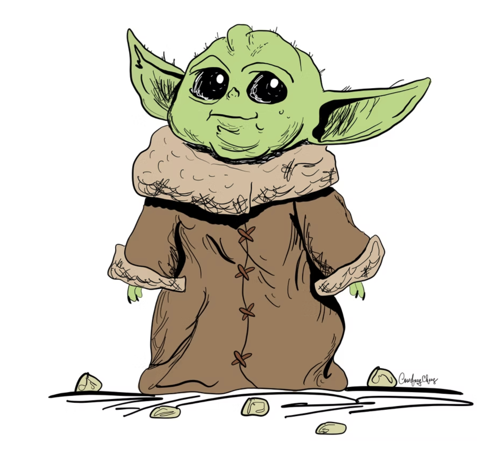
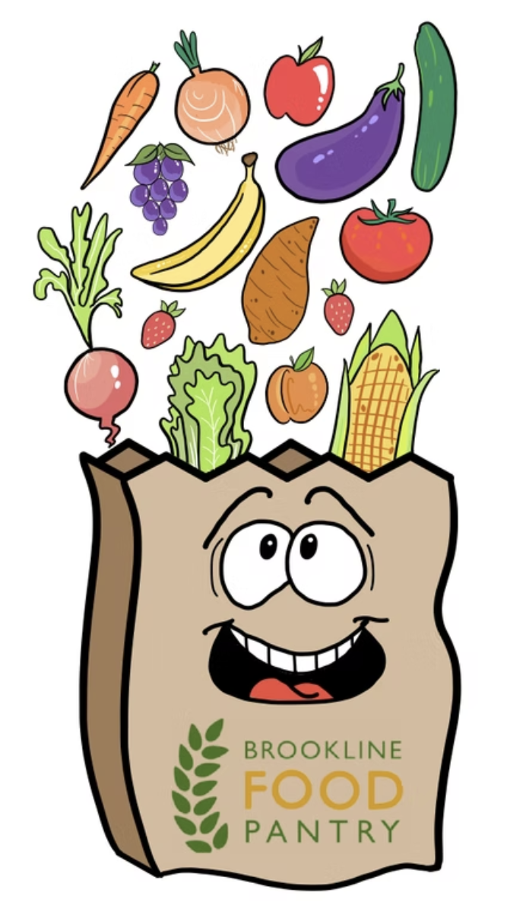
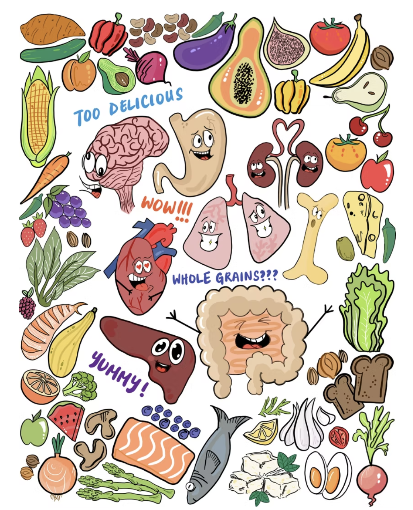

My interest in storytelling and art started at a young age, but it became a much bigger part of my life during the pandemic. While volunteering at a hospital and serving at a local food pantry, I began creating illustrated cards and cartoons for healthcare workers, volunteers, and community members as a way to bring small moments of encouragement and connection during a difficult time.
Since then, cartooning and visual storytelling have become one of my favorite creative outlets. I enjoy finding ways to simplify complex ideas, emotions, and everyday observations into something approachable and human. That perspective has also shaped how I communicate professionally, especially when translating technical concepts into clear, relatable outcomes for customers.
I’m also deeply interested in how AI can augment creativity and communication, which is part of what motivated me to start building projects with OpenAI tools and Codex.

Cartoon card for pediatric patients at Boston Children's Hospital before their orthopaedic surgeries.

Cartoon for the Brookline Food Pantry. The Brookline Food Pantry in Brookline, Massachusetts asked me to create art to include in their community newsletter, local flyer, and emails to donors.

Art titled "Food is Medicine". My submission for 7th Edition of The Healing Process, a bi-annual magazine that explores health and wellbeing through art. It is read throughout the USC community and greater Los Angeles area.